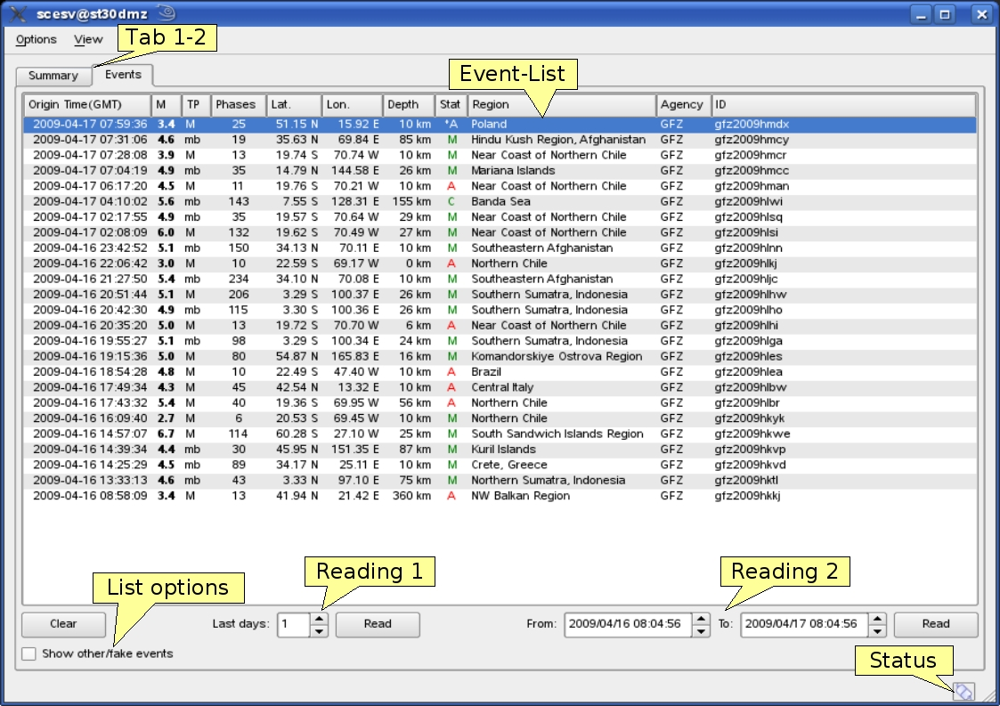
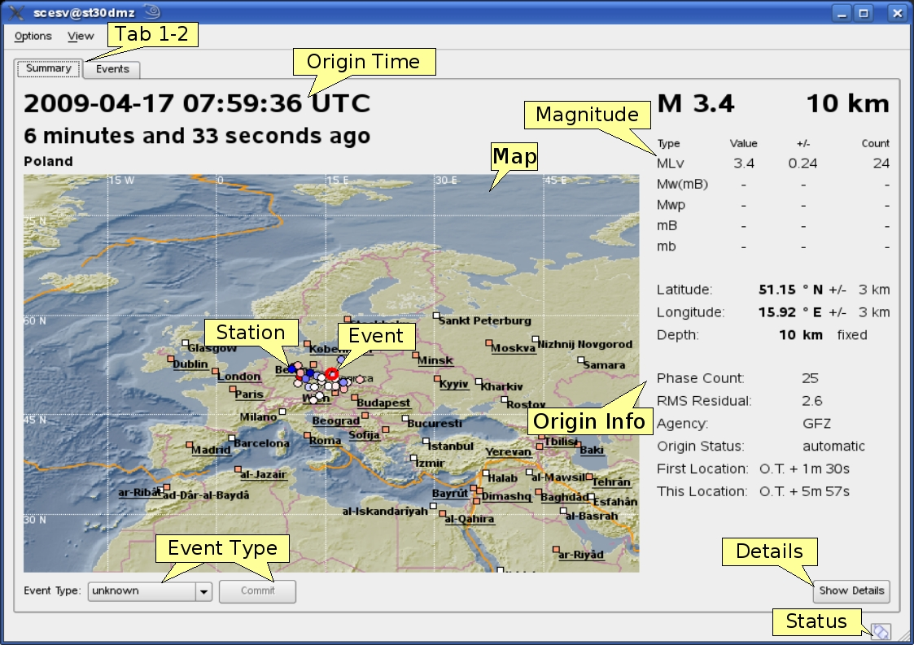

scesv¶
Event summary view
Description¶
scesv is the summary display of the event parameters. It shows the primary information about the current event including location, time, strength, type and processing status. Additional to the current event older events can also be chosen from the eventlist in the events tab.
The two tabs of scesv are shown in Eventlist tab and Summary tab. The Events tab shows the eventlist of the time span defined on the bottom side of the window. A the Events tab is also available for other GUIs, such as scolv it can be configured in the global module configuration. The description of the Events tab in scolv provides more details.

Eventlist tab¶
Tab1-2: Summary/Events tab, EventList: list of the last events with summarized information, List options: Show fake events, Reading 1: spinbox to limit timespan of displayed events (in days), Reading 2: spinboxes to limit timespan of displayed events (specified dates), Status: connection status
The actual (default) or selected event (from eventlist) is shown in the (Summary tab). Here the information are highlighted in four sections:
section |
description |
|---|---|
Time |
orign time in UTC and relative to now |
Region |
a map of the region and location with the event and stations |
Magnitude |
different magnitude types, the values and counts |
Hypocenter |
origin information with location, depth, azimuthal gap etc. |

Summary tab¶
Tab1-2: Summary/Events tab, Origin Time: origin time in UTC and relative to now, Map: map with region and location and stations, Magnitude: different magnitude types with values and counts, Origin Info: hypocenter information with position, phase count and azimuthal gap, Event: earthquake location, Station: station with ray-path, Details: “Show Details” button to open detailed information in scolv, Event Type: event type combo box to set event type, Status: connection status
Hotkeys¶
Hotkey |
Description |
|---|---|
F2 |
Setup connection dialog |
F6 |
Show propagation of P and S wave |
F8 |
Toggle auto update |
F9 |
Show raypaths and associated stations |
F10 |
Toggle tabs |
F11 |
Toggle fullscreen |
Mouse wheel |
Zoom map in/out |
Double click |
Center map |
Configuration¶
etc/defaults/global.cfgetc/defaults/scesv.cfgetc/global.cfgetc/scesv.cfg~/.seiscomp/global.cfg~/.seiscomp/scesv.cfgscesv inherits global options.
-
loadEventDB¶ Type: double
Unit: days
Number of days to preload if scesv is started. Default is
1.
-
showLastAutomaticSolution¶ Type: boolean
If enabled, the last automatic solution is displayed next to the current solution in the summary panel. If the last automatic solution differs from the current solution it is displayed in red. If both solutions match it is displayed in gray. Default is
false.
-
showOnlyMostRecentEvent¶ Type: boolean
If enabled only the most recent event is shown even if an update of an older event is being received. Default is
true.
-
recenterMap¶ Type: boolean
If enabled, the map is centered around the most recent event event. Default is
true.
-
enableFixAutomaticSolutions¶ Type: boolean
If enabled, an additional button is displayed which allows to switch back the latest automatic solution. This button triggers an command for scevent to prioritize automatic solutions until the next manual solution is available. Default is
false.
-
visibleMagnitudes¶ Type: list:string
A list of magnitude types to be displayed. Default is
M,MLv,mb,mB,Mw(mB).
Type: string
Label of button0 which triggers script0.
Type: string
Label of button1 which triggers script1.
-
ignoreOtherEvents¶ Type: boolean
If the event type is either “other” or “not existing” and this flag is true then the event will not be shown. Default is
true.
-
scripts.script0¶ Type: string
Path to a script if button0 is clicked.
-
scripts.script1¶ Type: string
Path to a script if button1 is clicked.
-
scripts.script0.exportMap¶ Type: boolean
If enabled, the current map is exported to file. The filename is appened to the parameter list of script0. The script has to take ownership of the file. Default is
false.
-
scripts.script0.oldStyle¶ Type: boolean
If enabled, the parameter list of script0 is eventID, arrivalCount, magnitude, description.
If disabled, the parameter list of script0 is eventID, preferredOriginID, preferredMagnitudeID, preferredFocalMechanismID. Default is
true.
-
scripts.script1.exportMap¶ Type: boolean
If enabled, the current map is exported to file. The filename is appened to the parameter list of script1. The script has to take ownership of the file. Default is
false.
-
scripts.script1.oldStyle¶ Type: boolean
If enabled, the parameter list of script1 is eventID, arrivalCount, magnitude, description.
If disabled, the parameter list of script1 is eventID, preferredOriginID, preferredMagnitudeID, preferredFocalMechanismID. Default is
true.
-
summary.borders¶ Type: boolean
Draw borders in the summary panel. Default is
false.
-
display.lonmin¶ Type: double
Minimum longitude of initial displayed map region.
-
display.lonmax¶ Type: double
Maximum longitude of initial displayed map region.
-
display.latmin¶ Type: double
Minimum latitude of initial displayed map region.
-
display.latmax¶ Type: double
Maximum latitude of initial displayed map region.
-
display.event.comment.id¶ Type: string
-
display.event.comment.default¶ Type: string
-
display.event.comment.label¶ Type: string
-
display.origin.comment.id¶ Type: string
-
display.origin.comment.default¶ Type: string
-
display.origin.comment.label¶ Type: string
-
poi.maxDist¶ Type: double
Unit: deg
Maximum distance in degrees of a POI (point of interest read from cities.xml) to be taken into account. Default is
20.
-
poi.minPopulation¶ Type: double
The minimum population of a POI to be taken into account.
-
poi.message¶ Type: string
Message conversion string that converts a POI into the text displayed under the region label. There are different placeholders that can be used: @dist@, @dir@, @poi@ and @region@.


{kind=link}
{kind=link}